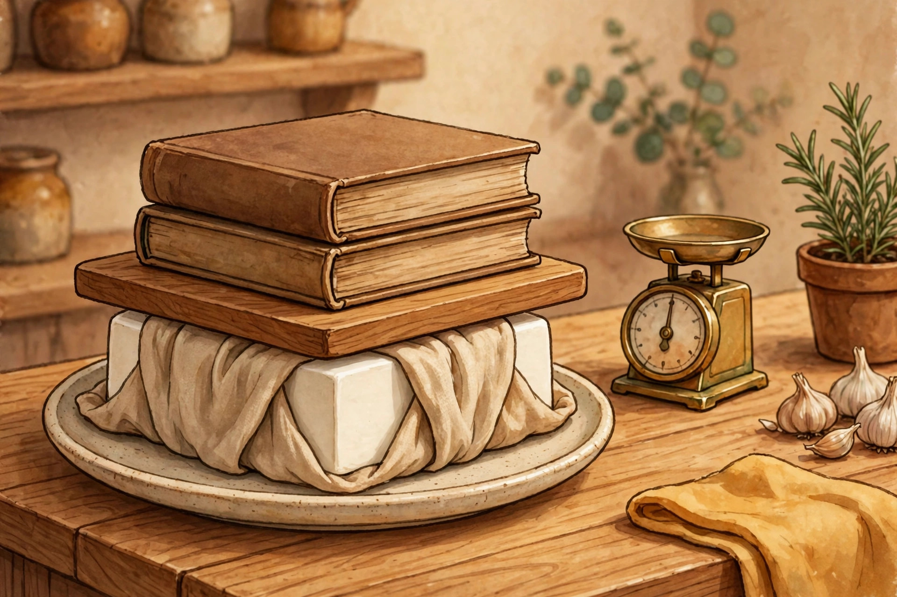

Textbooks as a Tofu Press: Heavy Books, Dry Books, Firmer Tofu

15 to 30 minutes. 30 to 60 minutes. 1 to 4 hours. Those are all published answers to the same simple question, how long to press a block of tofu under a weight, and the heaviest weight most of the guides reach for is a stack of books. Your textbooks are, for once, the officially recommended equipment. The catch is that the guides agree on the books and disagree on almost everything else, including what the water does to the books.
The one warning every book owner needs
Pressing has a simple job. It removes excess water from tofu so the block can absorb marinades, and it firms the texture slightly. It does not, on its own, make tofu flavourful. Flavour still comes from what the pressed block soaks up afterwards.
Every press is built from three roles: something absorbent, something flat, and something heavy. The trap sits in the middle role. The flat item rests directly on the towel wrapped around the tofu, and that towel absorbs water and gets wet. One guide spells out the consequence for book owners in unusually honest detail: a thick college textbook looks perfect for the job, until the towel soaks the cover completely and the college bookstore will not buy the book back. Its advice is to use a book you do not mind ruining.
There is a better answer than sacrificing a book, and it follows from the roles themselves. The book belongs in the heavy role, on top, dry. The flat role belongs to a board or a plate. Between the wet towel and the textbook, the board does the distributing and takes the damp. The build below is arranged so no textbook ever touches the towel.
Build the press so the book stays dry
Step 1: Start with the right tofu. Use firm or extra firm tofu, in a one pound block. Soft and silken tofu turn to mush under weight and are excluded from this job entirely. One to two pounds at a time is the workable amount; pieces of half a pound or less are hard to balance a weight on.
Step 2: Drain and wrap. Drain the tofu, remove it from its package, and wrap the block in a clean dish towel or paper towels, on a plate that catches the water.
Step 3: Board on the towel, never book on the towel. Set a cutting board or another plate flat on top of the wrapped block. Choose one not much larger than the block itself, because overhang increases the likelihood that the weights on top will fall off.
Step 4: Stack the textbooks on the board. Centre the books and distribute the weight evenly. A crooked stack shifts the whole press and risks the weights falling. For a weight target, the published figures are modest: a homemade weight press is listed at 2 lb, a step by step uses a 5 lb hand weight, and pressing curd into a block uses approximately 2 to 4 lb. One textbook, weighed on a kitchen scale, will usually settle whether a second one is needed. Weigh the candidate; the scale ends the argument.
Step 5: Press, and use the fridge for long presses. Apply the time from the table below for the result you want. If the press runs longer than 30 minutes, the guidance is to do it in the fridge.
Step 6: Unstack in reverse. Books off first, board second, towel last. The textbook covers should be exactly as dry as they were at the start. That dryness is a step in the method, not a happy accident.
Pick your minutes: the reconciled press table
| What you want | Press time | Where the figure comes from |
|---|---|---|
| A light press where pressing is optional | 10 to 15 minutes | The guideline for recipes where pressing only helps a little |
| A standard press before cooking | 20 to 30 minutes | The towel and weight method's own time, and the labelled standard press |
| A firmer block, checked before deciding | About 45 minutes to 1 hour | One guide advises an hour before checking firmness; another says that after about 45 minutes as much water will be released as possible |
| Deep marinating afterwards | 1 to 2 hours, in the fridge | The guideline for marinating and deeper flavour |
| The slow homemade weight method | 1 to 4 hours | The listed time for a 2 lb homemade weight press, depending on expected firmness |
Read the disagreement honestly and it stops looking like chaos. The short times belong to light and standard presses of a bought block. The long times belong to a light 2 lb weight and to presses done for marinating. The outlier claim that nothing more happens after 45 minutes and the 1 to 4 hour method cannot both be the whole story, so the deciding rule is the goal in the first column, not loyalty to one guide. A dedicated press, for comparison, runs anywhere from 15 minutes to 2 hours, and a mechanical dual plate press is listed at 15 to 45 minutes.
When pressing is not worth the textbooks
Press it: marinating, where the flavour needs to penetrate; breading, where the coating needs a drier surface; grilling, where the block needs to hold together; and sliced or fillet style pieces that must keep their shape.
Skip it: super firm tofu, which has already had much of its water removed; crumbling for tacos or scramble, where the shape is being destroyed on purpose anyway; sauce added after cooking; and baking or frying when cooking a little longer can do the drying instead. In those cases the textbooks can stay on the shelf, which is also where they keep best.
One limit applies to the whole arrangement. The weight should press evenly without causing the tofu to collapse. If the block cracks or slumps under the stack, the stack is too ambitious. Remove a book. The tofu is dinner; the textbook is reusable equipment; neither benefits from a collapse.
What success looks like
A block that comes out of the towel noticeably firmer and thinner than it went in, ready to take on a marinade. A plate holding the water that used to be in the tofu. A cutting board that took the damp on the books' behalf. And a stack of textbooks back on the shelf with dry covers and unwarped boards, pressed into service in the kitchen and returned without a single casualty. It is the rarest outcome on this site: a textbook job where the book is still, afterwards, a book.
, Rex Bennett, Entertainment Writer